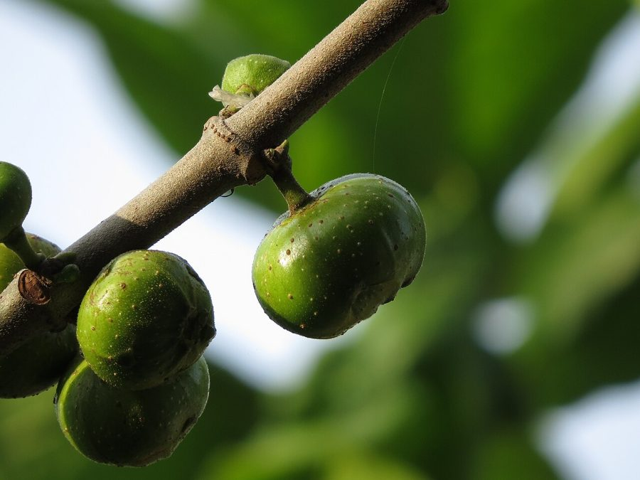

गूलरCluster Fig
Ficus racemosa · Moraceae · FLR-0120

- Scientific name
- Ficus racemosa L.
- Family
- Moraceae
- Hindi
- गूलर
- Status here
- native
- IUCN
- not evaluated
- Review
- audited and independently read
When to look कब देखें
Present all year.
Uses and possibilities उपयोग और संभावनाएँ
“Traditional medicine” means a documented traditional use, not a claim that it works. Nothing on this page is medical advice.
Drawn from the documented uses in the profile below, where each is labelled traditional, current or a research lead. All uses →
गूलर / Cluster Fig
Ficus racemosa L. — Moraceae
गूलर — भारत के सबसे पुराने पेड़ों में से एक, जिसके फल गरमी में पशुओं और पक्षियों का खाना हैं। पेड़ की कोई तय शक्ल नहीं — कभी छोटा झाड़ीनुमा तो कभी बड़ा ताज़े छायादार — लेकिन इसकी सबसे अलग बात यह कि फल सीधे तने पर गुच्छों में लगते हैं, शाखाओं पर नहीं। भूरे से लाल फल, खट्टे-मीठे, बीज भरे, गाय-भैंस, लोमड़ी, चिड़ियों और चमगादड़ों को भाते हैं। हिंदू धर्म में इसे पवित्र माना जाता है और इसे बनिया का पेड़ कहते हैं।
Quick Identification त्वरित पहचान
| Feature | Description |
|---|---|
| Size | Small to medium deciduous tree, 5–15 m, with a spreading crown |
| Leaves | Simple, alternate, ovate to elliptic, 5–15 cm, with entire or slightly lobed margins, rough texture above |
| Fruits | Fleshy syconia (fig fruits) 2–4 cm across, growing directly from the trunk and older branches in racemes, yellow-brown ripening to reddish-brown |
| Bark | Greyish-brown, smooth, with white latex exuding from cuts |
| The test | Look for figs growing from the trunk and thick branches, not the twig tips — this is the signature of the cluster fig |
Field tip: In an open grove in May, look for a tree with figs clustered on the trunk like a mango's growth but smaller and more numerous. The leaves are rough and sandpaper-like when you run your hand over them. The white latex confirms it is a fig.
हिंदी — कैसे पहचानें: तने और मोटी शाखाओं पर सीधे अंजीर के गुच्छे, तने पर नहीं। पत्ती रेत जैसी खुरदरी। सफेद दूध। इसे तने पर लगे फलों से आसानी से पहचाना जा सकता है।
Morphology आकारिकी
Biometrics (northern Indian plains):
| Measurement | Range |
|---|---|
| Height | 5–15 m |
| Trunk diameter | 20–60 cm |
| Leaf length | 5–15 cm |
| Leaf width | 3–10 cm |
| Fruit diameter | 2–4 cm |
Trunk and bark: Straight to crooked, with greyish-brown, smooth bark that exudes white milky latex when injured. Wood pale yellow, soft, not durable.
Leaves: Alternate, simple, ovate to oblong, tapering to a point, margins entire or with one or two shallow lobes near the base, dark green above and rough to touch (hirsute), paler beneath with a short petiole.
Inflorescence and fruit: The figs are borne directly on the trunk (cauliflorous) and older branches in short racemes, yellowish ripening to reddish-brown, each with a single apical ostiole (opening). The fig wasp Ceratosolen pollinates the flowers enclosed within.
Latex: Abundant, white, drying to resinous gum.
हिंदी: पत्ती खुरदरी, सपाट, पेड़ की तने और मोटी शाखाओं पर सीधे अंजीर के गुच्छे, पकने पर भूरे-लाल।
Behaviour & Ecology व्यवहार और पारिस्थितिकी
A pioneer tree of open woodlands and deciduous scrub, tolerant of poor and even rocky soils; drought-hardy and capable of rapid regeneration from fallen seeds dispersed by animals. The fruit is a keystone resource: ripens progressively through the warm months, ensuring a year-round supply when other food is scarce. Bats (fruit bats and insectivorous species), birds (mynas, parakeets, crows), and mammals (porcupines, pigs) visit the fruiting trees.
The relationships between Ficus and its pollinating wasps are among the tightest in nature: each fig species is pollinated by one or two specific fig wasps, and the wasp breeds only in that fig.
हिंदी: खराब ज़मीन पर भी उग जाता है, सूखा सहता है। फल साल भर विभिन्न समय पर पकते हैं। चमगादड़, पक्षी, सूअर, सिही सब फल खाते हैं। अंजीर और उसकी ततैया का रिश्ता अपरिहार्य है।
Life Cycle / Phenology जीवन चक्र
| Month / season | Event |
|---|---|
| April–May | New leaf flush; early figs ripen |
| June–September | Flowering and fruiting continues through monsoon |
| October–November | Peak fruiting; figs most abundant and sweet |
| December–February | Fruiting slows; sparse leaf fall in late winter |
| Maturity | Fruiting begins at 5–7 years |
Seeds germinate in the warm monsoon. Lifespan reaches many decades.
हिंदी: गर्मी और पतझड़ में फल; बरसात में बढ़ाई; ठंड में फल कम। 5-7 साल में फल देने लगता है।
Associated Species / Interactions संबंधित प्रजातियाँ
- Frugivores: Indian Flying Fox, fruit bat sp, mynas, parakeets, porcupines, pigs carry the seed widely.
- Pollinators: Fig wasps (Ceratosolen species); the relationship is obligate.
- Companions in groves: planted with Neem, Mango, Jamun in older homesteads.
Pests and Diseases कीट और रोग
- Fig wasp parasites and predators.
- Leaf-eating beetles and caterpillars in the monsoon.
- Root rot in waterlogged soils; rare under normal conditions.
Agricultural / Human Relevance कृषि प्रासंगिकता
Traditional and Ethnobotanical Use (documented uses; not medical advice):
- Fruit. Eaten fresh and dried; the dried fruit is traded and stored. Sweet, with a flavour between a guava and a raisin.
- Traditional medicine. Listed in Kirtikar & Basu and Chopra's glossary as a mild astringent and for digestive complaints.
- Sacred and cultural. The tree is planted near temples and is sacred to many Hindu traditions. In some regions called the "merchant's tree" (baniya ka ped).
Today. The fruit is eaten fresh when ripe or dried for storage and sale in village bazaars, though the market is small. The tree's primary value is ecological and cultural.
Research direction (a lead, not a result). Ficus racemosa populations in the Gangetic plain have not been surveyed, and its role as a food source for the region's bat and bird fauna deserves study.
हिंदी: फल खट्टे-मीठे, ताज़े खाए या सूखाए जाते हैं। बाज़ार में थोड़ा-बहुत बिकता है। देवता का पेड़ माना जाता है। दवा में कब्ज़ के लिए।
Expected Locally स्थानीय रूप से अपेक्षित
Not a field record. Written from published accounts for eastern Uttar Pradesh. No confirmed local sighting yet — if you have seen it, that is what the atlas needs.
अभी तक स्थानीय पुष्टि नहीं। यह विवरण प्रकाशित स्रोतों से है, किसी अवलोकन से नहीं।
To be expected in open woodlands, village groves, and near temples across the district. Any mature tree is worth recording because the species is becoming rarer in the plains.
Distribution वितरण
Global range: Native to South Asia from Pakistan through India to Sri Lanka; found in tropical deciduous forests and scrub.
In India: Widespread across the Gangetic plain and the peninsular plateau.
In Uttar Pradesh: Common in woodlands and cultivated settings.
In Basti district / eastern UP: Expected in village groves and temple grounds; status uncertain in wild woodland.
Research Questions शोध प्रश्न
Anyone can investigate these | कोई भी इन प्रश्नों की जाँच कर सकता है
- How many gular trees are left in your village, and how old are they? / आपके गाँव में कितने गूलर के पेड़ बचे हैं? — Walk the groves with an older person and record each tree's approximate girth.
- Which animals visit the fruiting trees in May and October? — Sit quietly near a fruiting tree in the early morning and record visitors.
- Do the figs taste the same in May as they do in October? — Sample and compare; record sweetness and seed count.
- How many individual figs ripen on one tree in a single month? — Count and estimate on several branches.
- Is the tree planted on purpose near temples in your block, and for how long? / क्या गाँव में गूलर का पेड़ जान-बूझकर मंदिर के पास लगाया गया है? — Ask the priest and older residents.
Similar Species मिलती-जुलती प्रजातियाँ
| Species | How to tell apart | हिंदी |
|---|---|---|
| White Fig (Ficus virens) | Leaves smaller and smoother; figs on branch tips, not the trunk; aerial roots common | छोटी चिकनी पत्ती, शाखाओं पर अंजीर |
| Soapnut (Sapindus mukorossi) | Pinnate leaves with no terminal leaflet; fruit is a saponin-rich drupe, not a fig | पंखनुमा पत्तियाँ, साबुन का फल |
| Jamun (Syzygium cumini) | Leaves shiny, not rough; fruits in panicles on branch tips; blue-black when ripe | चिकनी पत्ती, नीले काले फल |
Field rule: A tree with sandpaper-rough leaves and figs growing directly on the trunk in clusters is the cluster fig; no other tree in the district combines these characters.
Taxonomy & Classification वर्गीकरण
Original description. Described by Carl Linnaeus in Species Plantarum (1753: 1191) as Ficus racemosa, based on Indian specimens. The epithet racemosa refers to the racemose inflorescence.
Subspecies. Monotypic — no subspecies are currently recognised.
Family and order placement. Moraceae, the mulberry family; order Rosales. The genus Ficus holds about 850 species across tropical and subtropical regions, and is one of the largest and most successful plant genera.
Phylogenetic notes. Ficus is characteristic of the Moraceae, a basal family in the rosid clade. The genus is defined by the fig inflorescence (syconia) and obligate pollination by fig wasps.
IUCN status rationale. Not evaluated. Widespread in cultivation and wild settings.
Photo Gallery फोटो गैलरी
Photos needed आवश्यक फोटो
- [ ] Whole tree in a grove or temple (पूरा पेड़)
- [ ] Fruits on the trunk, May or October (तने पर फल)
- [ ] Close-up of rough leaves and fruit (पत्ती और फल)
Atlas Connections संबंधित प्रजातियाँ
- White Fig — the other Ficus of the plains; compare the leaf texture and fruit position
- Indian Flying Fox — one of the main fruit dispersers
- Neem — planted together in homestead groves
References संदर्भ
- Linnaeus, C. (1753). Species Plantarum, vol. 2, p. 1191. Stockholm. [original description]
- Hooker, J.D. (1875). The Flora of British India, vol. 5. L. Reeve, London. (Ficus)
- Corner, E.J.H. (1965). Check-lists of Ficus in Asia and Australasia with keys to identification. Clarendon Press, Oxford.
- Kirtikar, K.R. & Basu, B.D. (1935). Indian Medicinal Plants, 2nd ed., vol. 2. Lalit Mohan Basu, Allahabad.
- Chopra, R.N., Nayar, S.L. & Chopra, I.C. (1956). Glossary of Indian Medicinal Plants. CSIR, New Delhi.
- Watt, G. (1889). A Dictionary of the Economic Products of India, vol. 3. Government Printing, Calcutta.
- GBIF Occurrence Data — Ficus racemosa, India (2026).
Source file: species/flora/trees/gular.md